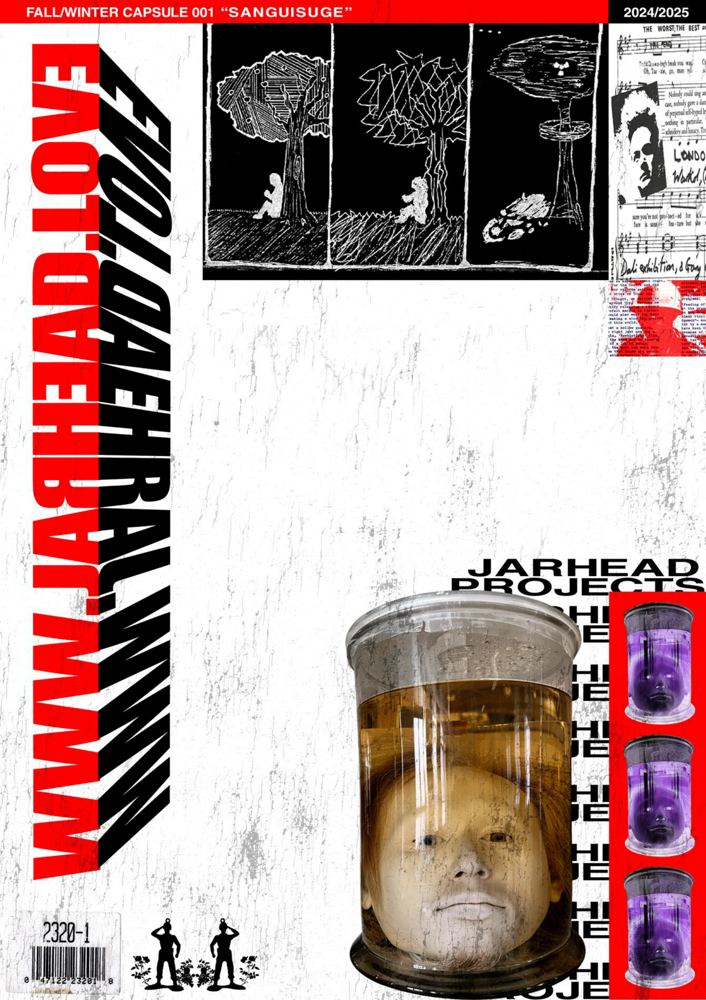
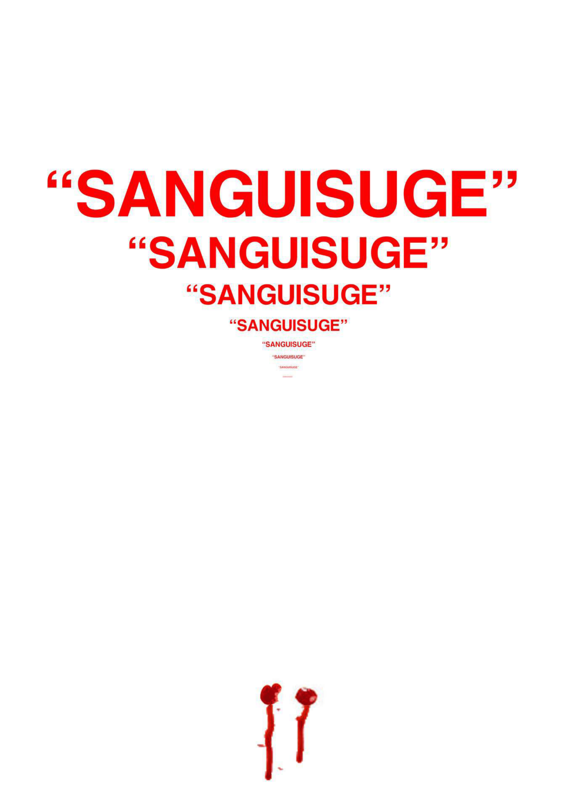
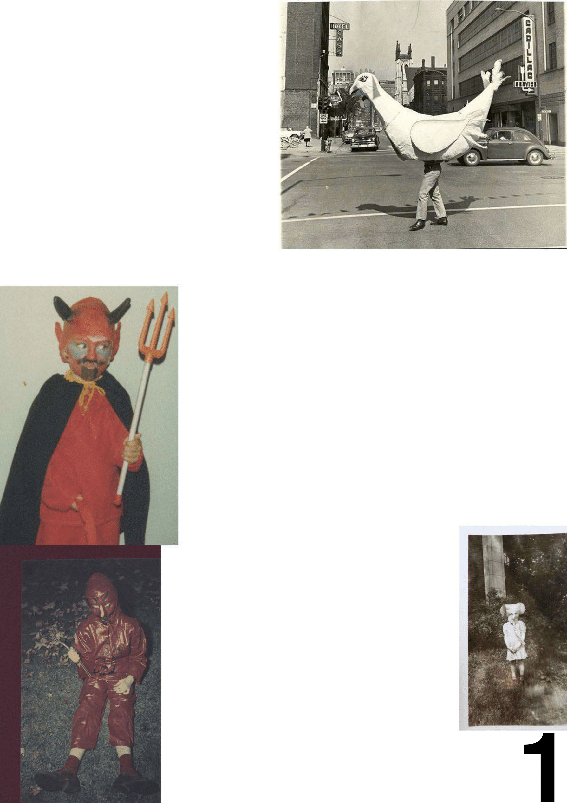
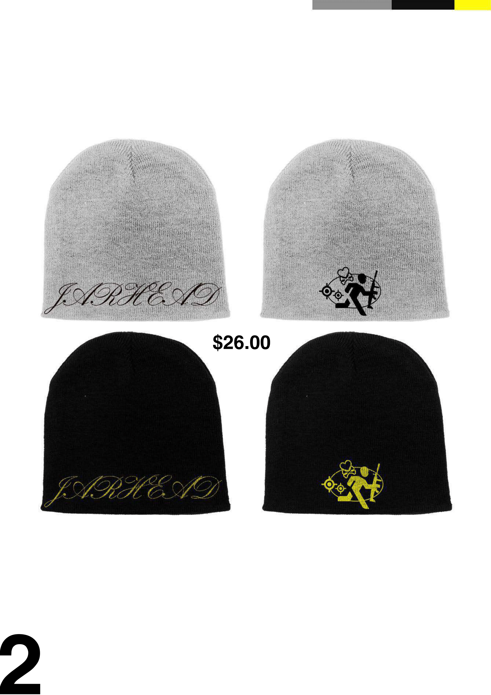
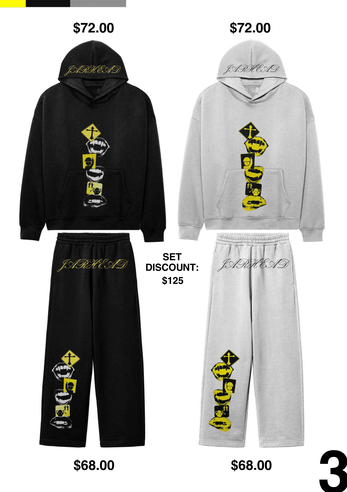
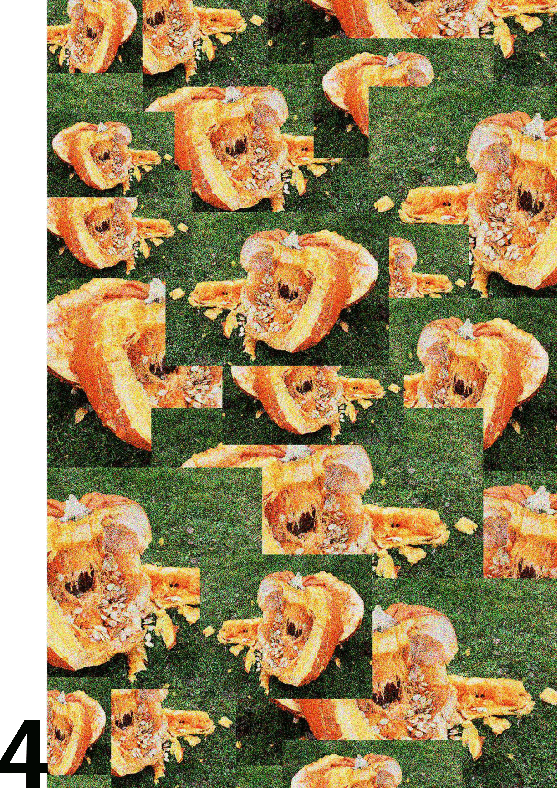
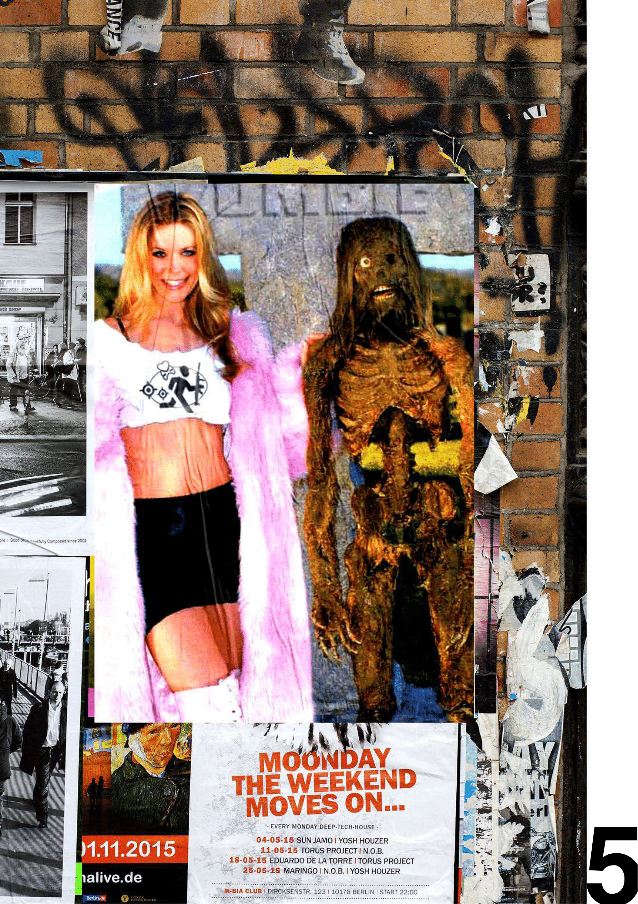
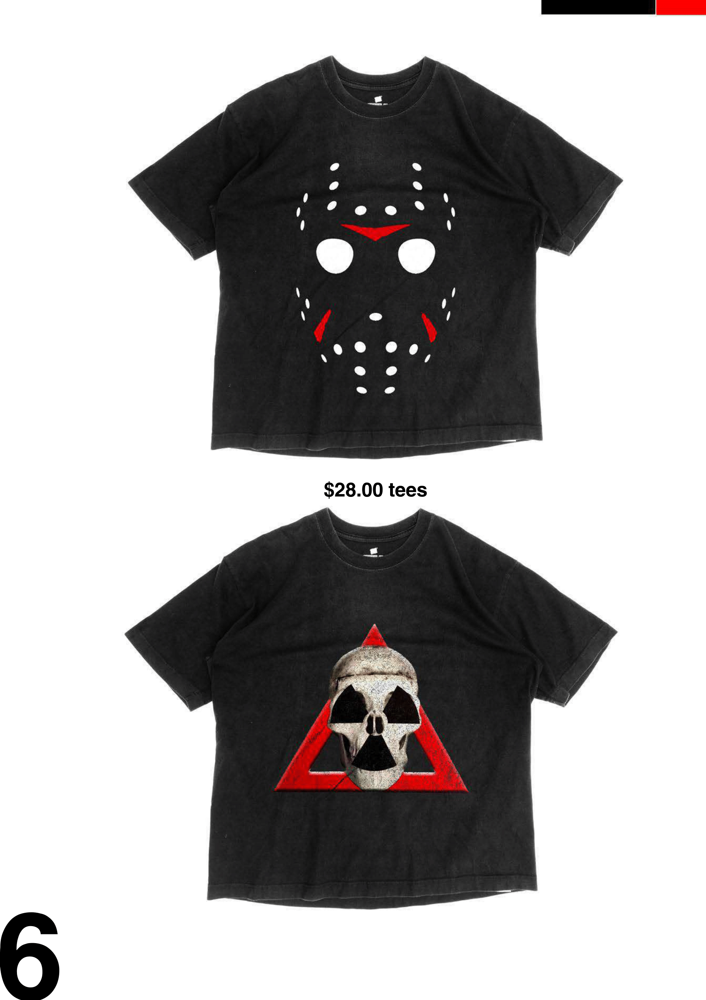
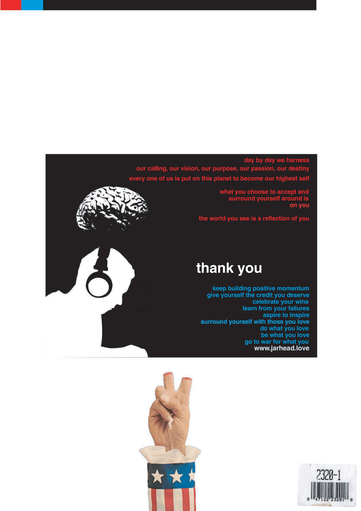
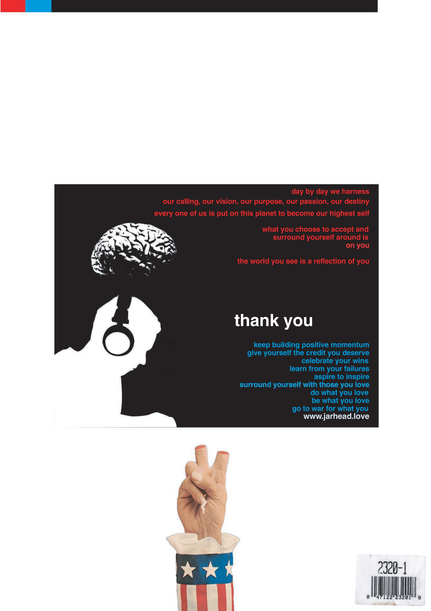

Sanguisuge Collection
What is initially seen as familiar yet seasonal, however, is also a disguise. Beneath that superficial layer, the collection explores consumption as an ongoing, often unexamined, cycle of generations through continual repetition, the spectacle, and/or normalcy of it. The imagery shown takes elements of fear and play and presents them with restraint in order to generate lingering connotations instead of explicit declarations.
While there is nothing haphazard about the garments' form and fit, their construction and the addition of the graphics create discontinuities. For example, warnings that are an integral part of our daily lives have become ornamental through decorative fashion; the abstraction of violence through seemingly innocuous patterns; the reduction of blood by using it for marking purposes only. Consequently, that tension is not simply decorative. It also exposes how power endures (or flourishes) through the act of obscuring extraction via the vessel of culture, entertainment, or tradition.
Instead of presenting images of horror directly, SANGUISUGE is interested primarily in how through frequency, the image becomes normal, how systems extract without an accompanying spectacle, and how many people mistake consuming with being participatory. Therefore, this collection encompasses the tension of elegance vs erosion along the continuum of what is produced and/or worn in relation to what they actually represent.








 
← back

← back